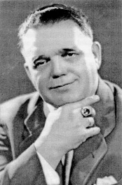
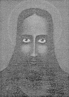
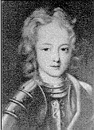
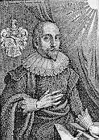
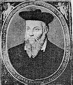
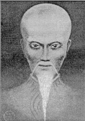
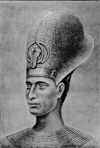

(The German text was translated into English by PA with the exception of the two letters of the first part: "The Franz Bardon Foundation" which were in English.)
Wuppertal, 27. August 1997
As I became aware that there are some papers around, which contain scathing attacks on Franz Bardon and which try to distort his teachings, I would like, as the trustee of Bardon's bequest, to comment on some of these twisted informations.
To become a magician is no thing to play around with and by careless use of this ART students may be seduced to perform thoughtless actions.
These imprudent actions may lead to serious states of illness, that most often are then allotted by fault to the author.
Therefore I will repeat in the following material the most important warnings and requirements, which Franz Bardon integrated as hurdles in his works, to protect reckless people from performing thoughtless actions and to safeguard their health.

by Dieter Rüggeberg (27. August 1997)
In 1987 a Mr. Jim Milligan founded the "Franz Bardon Foundation". I never received any support for the work of Franz Bardon from this "Foundation", in the contrary at first I supported it with free books. Yet soon Jim Milligan showed his real character by changing his name into "Jim Bardon" in order to be able to ... (censured) his clients more easily.
Thereupon I mailed him the following letter:
The Franz Bardon Foundation
P.O.Box 4869
Denver, Colorado 80204
USA
22. June 1987Dear Jim,
with amazement I have taken notice of the change of your name, as stated on FBN-No. 6. We have already a guy here in Germany calling himself "The Representative of Urgaya" and this one is already one to much in my eyes. It is not my duty to criticize people like you, therefore I simply want to state here the meaning of psychology about deeds like yours. From the psychological standpoint the change of your name is an act of utmost disregard against Franz Bardon and Urgaya! The qualities of character belonging to such a disregard you can read after in any good book about the human character. It is simply the same as if someone would call himself "Jesus Christ Superstar".
The student of magic knows that the master has the choice to call his disciples, and not vice versa. Humble words mean nothing to a master, but only humble actions! In short, I want you to recall the change of your name. If you are not willing to do this you cannot reckon on any cooperation from my side in future times.
Yours sincerely, (Dieter Rueggeberg).
As Jim Milligan was not disposed to undo his change of name I mailed the following circular letter to a number of people who were subscribers of Milligans "Franz Bardon News" as I did know:
Dear friends of Hermertics,
attached is a copy of my letter dated June 22, 1987 addressed to Jim Millligan, the founder of the "Franz Bardon Foundation", on occasion of the change of his name. Meanwhile I received his answer with the statement that he is not willing to recall his decision. This forces me to distance myself from all further activities of the "Franz Bardon Foundation".
It is quite clear, to anyone who is studied in psychology that such a change of name has nothing to do with love and adoration but is just a mask for jealousy and hate. Any good psychiatrist knows about this problem.
I regret this development, because the basic ideas were quite promising and could have been a real help for the work of Franz Bardon. However, as long as I am the executor I have to watch what is done under the name of Franz Bardon and try my best to keep it clean from all sorts of rubbish.
Just a few sentences to the "Training Guide " by Jim Milligan. The chapter 5 "Making your own basic sigil necklace" especially must be considered as a nonsense from the true hermetic standpoint for several reasons. The main reason is what Master Bardon told us in "The Practice of Magical Evocation" on page 144 (4th edition): "However, it is not wise to wear an amulet for a long time with the sign of a Being, for the magician would become too dependent on the Being and could lose his equilibrium and magical authority." This is meant for the full developed magician !! The beginner should keep away from any attempt to contact spiritual Beings directly or indirectly if he does not intend to make his way as a sorcerer. For the beginner it is quite enough to pray to his Guardian Angel who will always try to reach the very best for his protégé.
During the past months I have been very busy to write my first own book, which is nearly ready now. I hope to have the German edition until the end of the year and will then try to make the English edition in the next year.
Be wakeful and pay attention,
yours sincerely,
Mit freundlichem Gruss,
Dieter Rüggeberg.
(See also: Jim Milligan's reply to Dieter Rüggeberg's accusations.)
(See
also: Tim Scott's essay)
(See also:
A sample issue of the FB_news by Jim (Bardon) Milligan containing a very
interesting letter by Otti Votavova, the presumed author of "Frabato"
and former secretary of Franz Bardon)
by Dieter Rüggeberg (27. August 1997)
(Annotation by Paul Allen: The Bardon-Müller-Liga was founded by Mr. Cuno-H. Müller 196? in Switzerland and dissolved 1971.)
Only some months ago I got a copy of the newsletter of the aforementioned Liga. Because presently there gather some elements in order to cheat people spiritually and economically with similar methods that have been used by the Bardon-Müller-Liga, and because the Name of Franz Bardon is connected with these activities, I feel moved to comment briefly about it, though overburdened with ongoing work. Furthermore I'm always asked to take position if some impostor claims and publishes wrong assertions about Bardon's works or if someone harmed economically starts to get suspicious.
First some quotations from the aforementioned newsletter "Bring mehr Licht!" Zeitung Nr. 3 vom 17.3.1965 Herausgeber C.-H. Müller, Seite 20 ("Bring more light" issue nr. 3 dated 17. March 1965; editor C.H. Müller, page 20):
-------------
"These previous descriptions by Mr. Tesch did arouse a lot of cheerfulness and amusement, but also some astonishment about the "master" and, though the forced retention on the side of Mr. Tesch, I was confirmed in my opinions which I got from other sources: Franz Bardon could not have been the "Great Initiate", as it was believed by a lot of blind-faithful adorers. After the meeting I talked confidentially with Mr. Tesch and I got the impression, that he did know some other facts about Franz Bardon, which cannot be brought in accordance with his teachings. Yet I don't like to criticize the author of the "Quabbalah" in this respect, but I would like, in the sake of the truth, to admonish the members of this order:
Don't experiment wildly with the formulas and other teachings by Franz Bardon; nobody has to buy Franz Bardons books, who attends a course with our formulas, and who did not get them previously. Report by a personal acquaintance of Franz Bardon. (Comment by Paul Allen: I don't understand what this last sentence is for.)
I won't recommend any of these books for buying in our BML-news, in order that nobody is seduced to perform "follies" and "experiments" which consequences were not foreseen by Franz Bardon as he wrote his books, though he implemented some warnings.
All the good from the 'Quabbalah' will always be used by ourselves and its use will be authorized by me. But if somebody 'tries' to use other formulas, he has to take all consequences and should not blame it on me but on the author."
-------------
Franz Bardon described in his book "The key to the true Quabbalah" the requirements which everyone has to meet in order to be able to work with the science of Quabbalah in a clear way: There it reads on page 10:
"Whoever wants to deal with Theurgy has to master first all exercises of my first book 'Initiation into Hermetics'."
Everybody who experiments with the 'Quabbalah' without the proper preparation must therefore be prepared to get nothing at all and has to blame all bad side effects on his own stupidity or carelessness. In this respect there is no difference between natural and spiritual science: wrong application leads to harm.
Coming from Prague in 1970 or '71 to bring Mr. Müller some translations by Otti Votavova I could meet only the second chairman of the BML whose name was Bättig or Bättich if I remember correctly. He told me, that Mr. Cuno-H. Müller had left the Liga to join another order, and that he would try to carry the Liga on. After this meeting I never heard again about him or Mr. Müller
by Dieter Rüggeberg (27. August 1997)
Some authors claim that by not means it's necessary to get first the required spiritual development to be able to get into contact with the spirits mentioned above. To demonstrate the irresponsibility of such claimings everyone has only to read the requirements cited below:
"To be able to put into practice Evocational-Magic, as explained in my second book, you have to master completely my first book, which describes the first Tarot-card 'The Magician', at least up to step 8, in order to achieve satisfactory results also with Evocational-Magic."
(Original translation by Peter Dimai, page 9 of PME:
"The practical application of what I am going to say about exorcism in this, my second volume will only become possible for the reader who has attained the goal of my first book: a thorough command of the mysteries of the first tarot-card, or at least of the facts laid down in my first volume up to and including Step 8. Only then will the reader be able to achieve satisfying results.")
(The following quotation is not included in Rüggeberg's material. PA)
PME, p. 92:
"I should also mention the fact that a passive relationship is also possible with spirits of the astral plane and with spirits of higher zones. This passive intercourse however is not so effective and does not give such great magical results as the practice of evocation. Also in this case an unexpected pact could be the final outcome, and the person taking up the connection by this passive intercourse is sometimes even worse off than the sorcerer or necromancer, since he has no control at all over the spirit with which he has taken up connection, or over the effects caused by it."
Rüggeberg continues to quote Bardon ...
PME, p. 92:
"There are two principle kind of this passive intercourse: the first is a spiritistic one: the spiritist himself is the medium for the contact and intercourse with the spirit, either by clairvoyance, clairaudience, automatic writing etc.; the second possibility for passive intercourse is that a hypnotist or a mesmerist takes up the connection with the spirit by means of a somnambulant medium and maintains the contact continuously. If the hypnotist or spiritist has not undergone any magic training and if, therefore, has not the necessary degree of magical development and maturity, the health of the medium is endangered in both cases. Many mediums and spiritists who have often made use of it, so that they finally became dependent on that spirit - which actually results in an indirect pact - have had to pay for it with severe diseases of the mental, astral and physical body. Many a lunatic asylum could bear witness for such deployable cases."
"All I have said above especially applies to the work of sorcerers and necromancers with negative powers and the dangers involved. In this connection I should like to point out that the genuine magician, who having come along the path of true development tries to get into contact with positive spirits irrespective of their rank or zone, he should not become dependent even on good spirits or intelligence. He may if he likes, get into touch with a good spirit any time he wishes, but he should not join any spirit even if he is especially attracted by it, for if he does, a pact could also be the result, similar to such with negative spirits, though the dangers for a genuine magician operating with positive spirits could never be so great nor so tragic."
These quotations should suffice to warn improperly prepared people not to use carelessly the names and sigills of the spirits mentioned by Bardon. All harms which may arise from any talismanic work with names and sigills definitely cannot be blamed on Franz Bardon.
[as claimed by Otti Votavova. Paul Allen]
by Dieter Rüggeberg (27. August 1997)

Franz Bardon
(Czech Republic, 1909 (1925/26?) - 1958)

Mahum-Tah-Ta
Tibet, ? - 1925

Saint - Germain
Europe, 1696 - 1784

Robert Fludd
England, 1574 - 1637

Nostradamus
(France, 1503 -1566)
Christian Rosenkreuz
1378 - 1484
Apollonius of Tyana
about 4 - 96 A.C.

Laotse
China, 6. or 3. century B.C.

Hermes Trismegistos
in ancient Egypt as High Priest
Henoch
(Palestina, Year: ?)
by Dieter Rüggeberg (27. August 1997)
Because professor Adolf Hemberger (see also:
Who was Dr.
Adolf Hemberger ?) disseminated over years the lie, that Franz Bardon
borrowed his wisdom from Wilhelm Qintscher, I sent the following letter to the
son of W. Quintscher to clarify the matter. To my surprise there was no reply to
my letter. This means, that Mr. Ernst Quintscher was not interested at all in
clarifying the issue. I realy regret this fact, because Mr. Ernst Quintscher was
perhaps the only person who had information regarding the correspondence of
Franz Bardon and Wilhlem Quintscher. Unfortunately the death of Ernst Quintscher
makes it impossible to shed light on this matter.
As far as I know, neither
Franz Bardon was the student of Wilhelm Quintscher nor vice versa. Both gained
their magical wisdom independently of each other. I don't know when the two
first met. However they had been good friends.
To Mr.
Ernst Quintscher
Seestr. 14
2320 Plön
13.6.1985
Dear Mr. Quintscher, (Sehr geehrter Herr Quintscher)
..., with this letter I would like to clarify some points which maybe have been
misinterpreted.
During the time I compiled "Frabato" I didn't
know where you lived, otherwise if I had known it, I would have asked you about
the relationship between your father and Franz Bardon. For years Franz Bardon
had been accused by Dr. Hemberger of plagiarism. For this reason I mentioned
your father in "Frabato". It was never my intention to disparage your
father by these sentences in Frabato and I assure you that he had always had my
greatest appreciation. At this time there was no reason to doubt the statements
made by Otti Votavova. Though I didn't know Franz Bardon personally, I claim
that he didn't copy his wisdom from other authors. In a future new edition of
Frabato I will cancel the points in concern. It is a pity, that the papers of
your father have not been published systematically in these times. Also
publishing your memories about your father would certainly have been greatly
appreciated by many students. This would have made it impossible for a lot of
profiteers to make a lot of money by selling your fathers writings though
copyrights rightfully belonged to you.
Best regards,
Dieter Rüggeberg.

This page hosted by  Get your own Free Home Page
Get your own Free Home Page